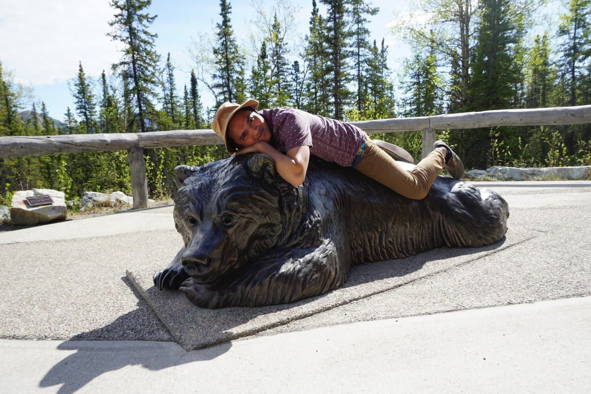
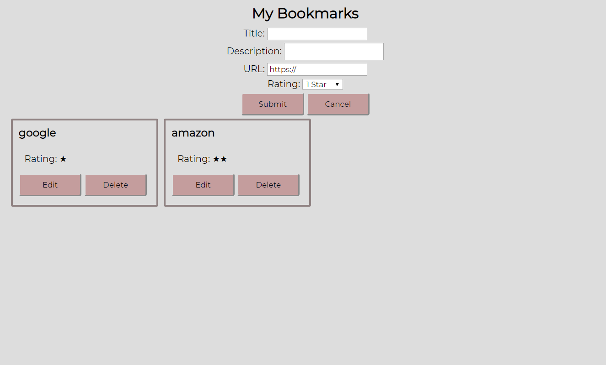

Hi, I'm Robin
software engineerworld traveler car enthusiastAbout Me
Growing up, I have always had a fascination with how things worked. I would take apart automobile engines just to reassemble it back together again. I loved seeing how various components worked collectively in creating the final product. My curiosity did not end there, as I took things into the virtual world. I became interested in how web pages worked, and soon that interest blossomed into a passion for coding and solving unique problems. On my free time, I enjoy rebuilding classic cars, snowboarding, and exploring a new city. I have been to 14 countries and almost half of the states in America. I also enjoy watching movies and am really captivated in the Marvel Universe.
Projects
-

Bookmark App
The bookmark app utilizes a api based server. It contains the functionality to add, edit and delete bookmarks. Each bookmark contains a title, description and a link. The application is mobile friendly and will adjust itself depending on the device it is viewed on.